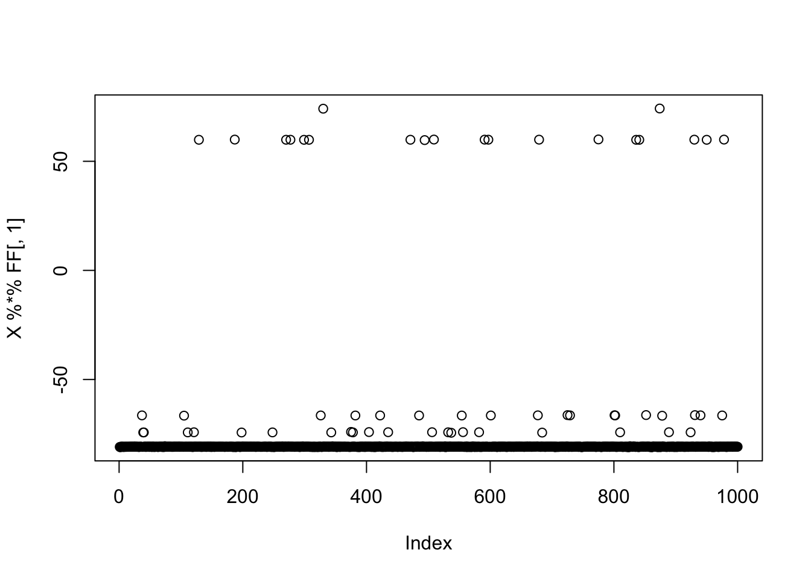
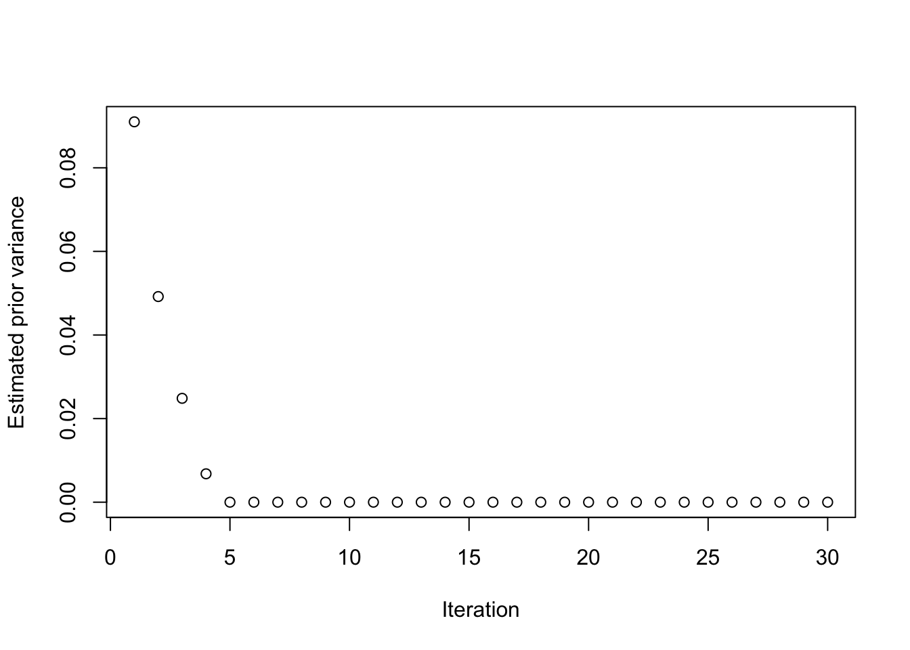
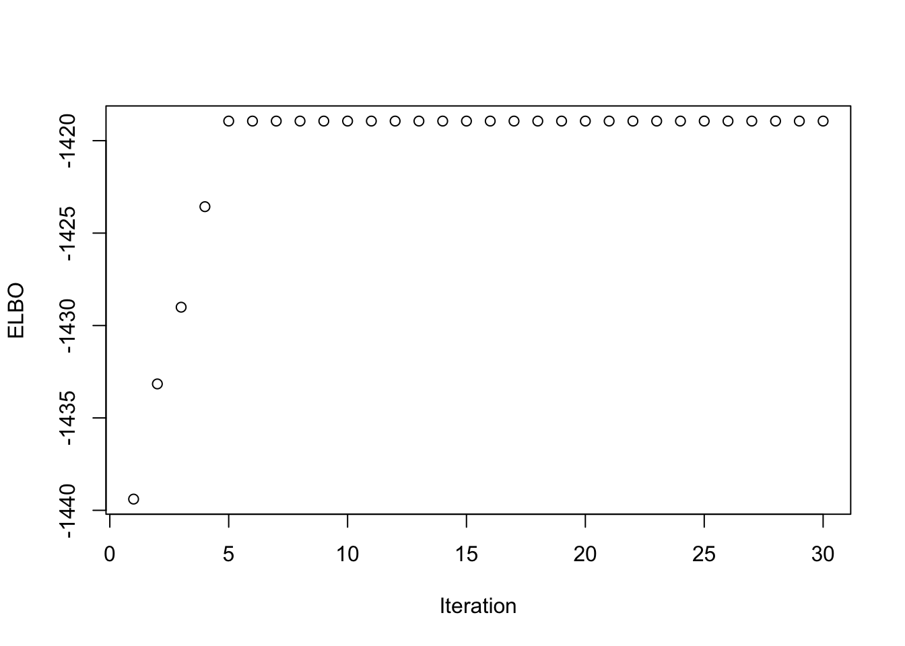
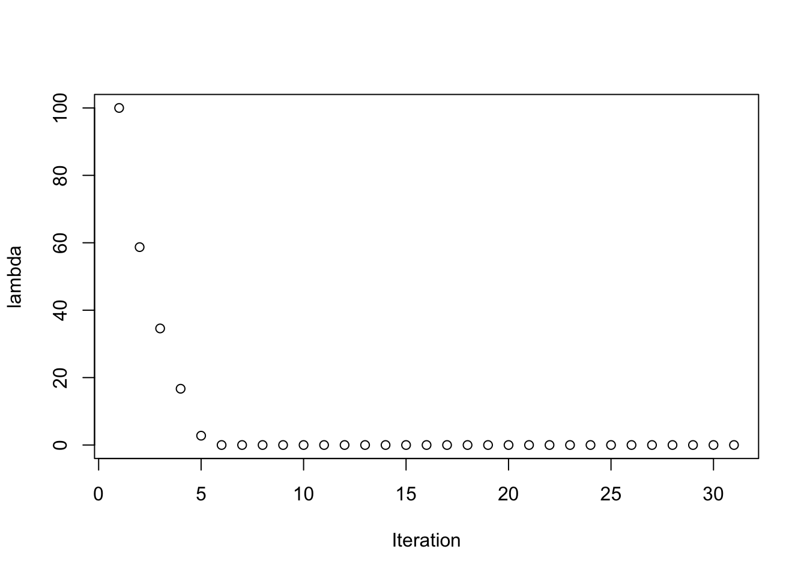
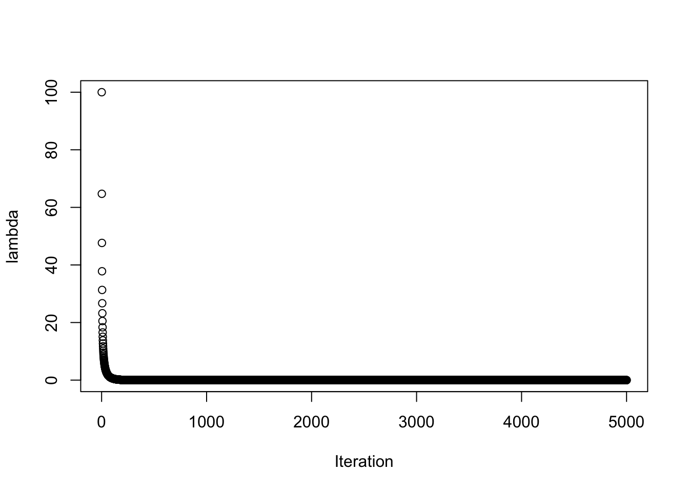
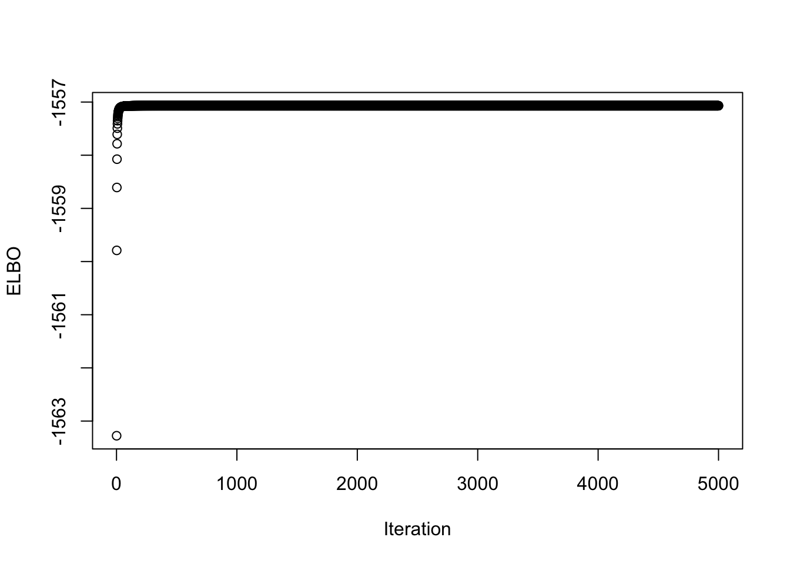
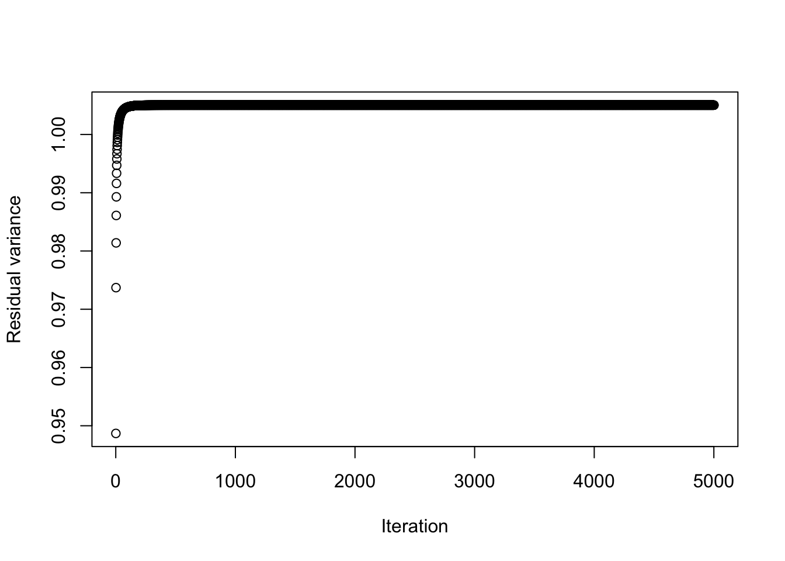
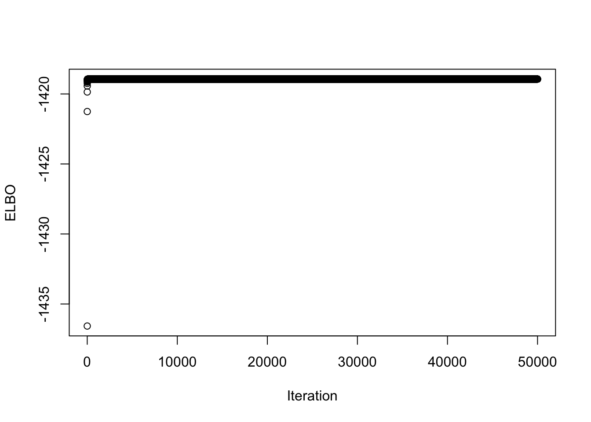
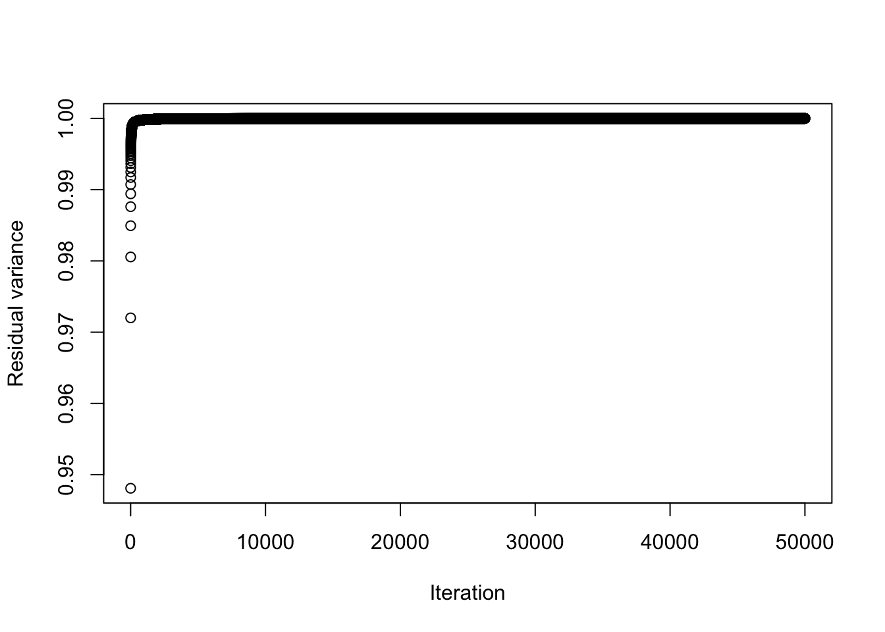

On Rank-1 flashier update with Normal prior + Rademacher prior on whitened data
junmingguan
2026-05-22
Last updated: 2026-06-04
Checks: 7 0
Knit directory: misc/
This reproducible R Markdown analysis was created with workflowr (version 1.7.2). The Checks tab describes the reproducibility checks that were applied when the results were created. The Past versions tab lists the development history.
Great! Since the R Markdown file has been committed to the Git repository, you know the exact version of the code that produced these results.
Great job! The global environment was empty. Objects defined in the global environment can affect the analysis in your R Markdown file in unknown ways. For reproduciblity it’s best to always run the code in an empty environment.
The command set.seed(20251108) was run prior to running
the code in the R Markdown file. Setting a seed ensures that any results
that rely on randomness, e.g. subsampling or permutations, are
reproducible.
Great job! Recording the operating system, R version, and package versions is critical for reproducibility.
Nice! There were no cached chunks for this analysis, so you can be confident that you successfully produced the results during this run.
Great job! Using relative paths to the files within your workflowr project makes it easier to run your code on other machines.
Great! You are using Git for version control. Tracking code development and connecting the code version to the results is critical for reproducibility.
The results in this page were generated with repository version bd74196. See the Past versions tab to see a history of the changes made to the R Markdown and HTML files.
Note that you need to be careful to ensure that all relevant files for
the analysis have been committed to Git prior to generating the results
(you can use wflow_publish or
wflow_git_commit). workflowr only checks the R Markdown
file, but you know if there are other scripts or data files that it
depends on. Below is the status of the Git repository when the results
were generated:
Ignored files:
Ignored: .DS_Store
Ignored: .Rhistory
Ignored: .Rproj.user/
Ignored: .luarc.json
Ignored: _extensions/
Ignored: analysis/.DS_Store
Ignored: analysis/exploratiion_normal_prior_on_factor.html
Ignored: analysis/presentation.html
Untracked files:
Untracked: Rplots.pdf
Untracked: analysis/draft.Rmd
Untracked: analysis/eb_ica_backup.Rmd
Untracked: analysis/ebica_math.md
Untracked: analysis/flashier_whitened_and_tree_example_tese.Rmd
Untracked: analysis/ica_vs_flash_r1_rad copy.Rmd
Untracked: analysis/ica_vs_flash_r1_rad.Rmd
Untracked: analysis/ica_vs_flash_r1_update_2.Rmd
Untracked: analysis/index_bacup.Rmd
Untracked: analysis/preemble.tex
Untracked: analysis/presentation.qmd
Untracked: analysis/references.bib
Untracked: analysis/tree_example.Rmd
Untracked: code/references.bib
Unstaged changes:
Modified: .gitignore
Modified: analysis/eb_ica.Rmd
Modified: analysis/flashier_whitened_and_tree_example.Rmd
Modified: analysis/ica_vs_flash_r1_update_1.Rmd
Modified: analysis/ica_vs_flashier_r1_rad.Rmd
Modified: analysis/ica_with_noise.Rmd
Note that any generated files, e.g. HTML, png, CSS, etc., are not included in this status report because it is ok for generated content to have uncommitted changes.
These are the previous versions of the repository in which changes were
made to the R Markdown
(analysis/on_flashier_and_whitened_data.Rmd) and HTML
(docs/on_flashier_and_whitened_data.html) files. If you’ve
configured a remote Git repository (see ?wflow_git_remote),
click on the hyperlinks in the table below to view the files as they
were in that past version.
| File | Version | Author | Date | Message |
|---|---|---|---|---|
| Rmd | bd74196 | junmingguan | 2026-06-04 | wflow_publish("analysis/on_flashier_and_whitened_data.Rmd") |
| html | b920fb2 | junmingguan | 2026-05-27 | Build site. |
| Rmd | be9c561 | junmingguan | 2026-05-27 | wflow_publish("analysis/on_flashier_and_whitened_data.Rmd") |
| html | ca18f78 | junmingguan | 2026-05-27 | Build site. |
| Rmd | 14f3c8b | junmingguan | 2026-05-27 | wflow_publish("analysis/on_flashier_and_whitened_data.Rmd") |
| html | dc001e2 | junmingguan | 2026-05-27 | Build site. |
| Rmd | 2b05fd2 | junmingguan | 2026-05-27 | wflow_publish("analysis/on_flashier_and_whitened_data.Rmd") |
| html | 70faf4e | junmingguan | 2026-05-27 | Build site. |
| Rmd | 7623537 | junmingguan | 2026-05-27 | wflow_publish("analysis/on_flashier_and_whitened_data.Rmd") |
| html | 0a81b92 | junmingguan | 2026-05-25 | Build site. |
| Rmd | 10712d1 | junmingguan | 2026-05-25 | wflow_publish("analysis/on_flashier_and_whitened_data.Rmd") |
| html | 314e47c | junmingguan | 2026-05-23 | Build site. |
| Rmd | edd63cc | junmingguan | 2026-05-23 | wflow_publish(c("analysis/on_flashier_and_whitened_data.Rmd", |
Here we demonstrate that flashier update with Normal and Rademacher prior might eventually collapse to 0.
Derivation
The model is
\[ Y \in \mathbb{R}^{n\times p} = vz^\top + E , \]
with a Rademacher prior on \(v\), a normal prior on \(z\), and an estimated noise variance:
\[ v_i \sim \operatorname{Rad}(1/2), \qquad z_j \sim N(0,c\sigma^2), \qquad E_{ij}\sim N(0,\sigma^2). \]
Denote
\[ S=YY^\top, \qquad P=S/n, \qquad \bar{v}=E_q[v], \qquad \lambda=\frac{\bar{v}^\top S \bar{v}}{\overline{v^\top v}} = \frac{\bar{v}^\top S \bar{v}}{n}. \] where we assume \(Y\) is whitened, so that \(P\) is a projection matrix.
Given \(q_v\), and \(\sigma^2\), the shrinkage factor for the posterior of \(z\) is
\[ \boxed{\alpha = \left(1-\frac{p \sigma^2}{\lambda}\right)_+} \]
Hence
\[ \boxed{\bar{z} = \alpha Y^\top \bar{v}/n} \]
and
\[ \boxed{\overline{z^\top z} = \alpha \lambda / n} \]
Plugging in \(q_z\) and \(\sigma^2\), the update for \(q_v\) is
\[ \boxed{\bar{v}=\tanh\left(\frac{\alpha}{n \sigma^2}S \bar{v}\right) = \tanh\left(\frac{\alpha}{\sigma^2}P \bar{v}\right)} \]
Understanding ELBO with respect to \(c\)
The ELBO for fixed \(c\) and \(\sigma^2\) is given by
\[ \boxed{ \begin{aligned} \text{ELBO} \text{ }=& -\frac{np}{2}\log(2\pi\sigma^2) -\frac{1}{2\sigma^2} \left[ \|Y\|_F^2 -2\bar v^\top Y\bar z +n\overline{z^\top z} \right] \\ & \text{ }- \sum_{i=1}^n \left[ \frac{1+\bar v_i}{2}\log(1+\bar v_i) + \frac{1-\bar v_i}{2}\log(1-\bar v_i) \right] \\ & \text{ } - \frac{1}{2} \left[ \frac{\overline{z^\top z}}{c\sigma^2} -p + p\log(c\sigma^2) - \sum_{j=1}^p\log \underbrace{\left(\overline{z_j^2} - \bar{z}_j^2\right)}_{=:\eta^2=\operatorname{Var}_q(z_j)} \right] \end{aligned} } \] Maximizing the ELBO over \(c\) with others fixed gives
\[ \boxed{ \hat{c} = \frac{\overline{z^\top z}}{p\sigma^2} } \]
Plugging in \(c\) into \(q_z\), we have
\[ \boxed{ \bar{z} = \frac{c}{1+nc}Y^\top \bar{v} \qquad \eta_j^2 = \frac{c\sigma^2}{1+nc} } \] So the ELBO profiled over \(z\) with \(\sigma^2\) fixed is
\[ \begin{aligned} \widehat{\text{ELBO}}(c, q_v) =\text{ }& \text{const.} + \frac{c}{1+nc} \frac{\|Y^\top \bar v\|^2}{2\sigma^2} \\ &- \sum_{i=1}^n \left[ \frac{1+\bar{v}_i}{2}\log(1+\bar{v}_i) + \frac{1-\bar{v}_i}{2}\log(1-\bar{v}_i) \right] \\ & -\frac p2\log(1+nc). \end{aligned} \] Then
\[ \hat{c} = \frac{1}{n}\left(\frac{\|Y^\top \bar{v}\|^2}{pn\sigma^2} - 1\right)_+ = \frac{1}{n}\left(\frac{\|Y^\top \bar{v}\|^2}{pn\sigma^2} - 1\right)_+. \]
So whether the ELBO is maximized at \(c=0\) for fixed \(q_v\) depends on whether \(\|Y^\top\bar v\|^2 = n\|P\bar{v}\|^2 > pn \sigma^2\).
But if we look at \(c\) and \(q_v\) jointly: since \(\text{KL}(q_v \| \text{Rad}(1/2)) \ge \frac12 \|\bar{v}\|^2\) (equality achieved when \(\bar v=0\))
\[ \begin{aligned} \widehat{\text{ELBO}}(c, q_v) \leq \text{ } & \text{const.} +\frac{c}{1+nc} \frac{\|Y^\top \bar v\|^2}{2\sigma^2} \\ & + \frac12 \|\bar v\|^2 -\frac{p}{2}\log (1+nc) \\ \leq \text{ } & \text{const.} +\frac{c}{1+nc} \frac{n \|\bar v\|^2}{2\sigma^2} \\ & + \frac12 \|\bar v\|^2 -\frac{p}{2}\log (1+nc) \\ = \text{ } & \text{const.} -\frac p2\log(1+nc) + \frac12 \left[ \frac{nc}{\sigma^2(1+nc)}-1 \right] \|\bar v\|^2=:U(c, \bar v). \end{aligned} \] For \(\sigma^2\ge 1\), \(\frac{nc}{\sigma^2(1+nc)}<1\). Ignoring the constant, \(U(c, \bar v)\le 0\) and is maximized at \(c=0\) and \(\bar{v}=0\), hence the profiled \(\widehat{\text{ELBO}}(c, q_v)\) is also maximized at \(c=0\) and \(\bar{v}=0\) and the maximum is \(0\).
\(\sigma^2\) not fixed
The noise variance update is
\[ \boxed{\hat{\sigma}^2 = \frac{\operatorname{tr}(S) - \hat{\alpha} \lambda}{np}} \]
- If \(\hat{\alpha} = 0\), \(\hat{\sigma}^2 = \operatorname{tr}(S)/np\) , \(\bar{v}=\tanh 0 = 0\); this happens when \(\lambda < \operatorname{tr}(S)/n=p\) for whitened \(Y\).
- If \(\hat{\alpha} > 0\), we have \(\hat\sigma^2=\frac{\operatorname{tr}(S)-\lambda}{p(n-1)}\). this happens when \(\lambda \ge \operatorname{tr}(S)/n=p\).
Suppose we start with an initialization \(\bar{v}_0\in\{\pm1\}^n\) such that \(p<\lambda_0<p\sqrt{n}\). Then for some finite \(t\) we have \(\bar{v}_t=0\).
Using estimates of \(\alpha\) and \(\sigma^2\), for the \(t\)th step,
\[ \frac{\hat\alpha}{\hat\sigma^2} = \frac{np(\lambda_t-p)}{\lambda_t(np-\lambda_t)}. \]
Define
\[ \gamma(\lambda_t) = \frac{np(\lambda_t-p)}{\lambda_t(np-\lambda_t)}. \]
Then the update is
\[ \bar{v}_{t+1}= \tanh\left(\gamma(\lambda_t)P\bar{v}_t\right), \]
The next estimate \(\bar{v}_{t+1}\) satisfies
\[ \lambda_{t+1} = \|P\bar{v}_{t+1}\|^2 = \|P\tanh(\gamma(\lambda_t) P\bar{v}_t)\|^2 \le \left\|\tanh(\gamma(\lambda_t) P\bar{v}_{t})\right\|^2 \le \|P\bar{v}_t\|^2 = \lambda_t, \]
whenever, \(p<\lambda_t\leq p \sqrt{n}\), so that \(\gamma(\lambda_t) \le 1\). (might also hold for \(\lambda_t > p\sqrt{n}\))
This tells us that \(\lambda_{t} \searrow p\). But once \(\lambda_{t}\) is sufficiently close to \(p\), the next iteration will cross the threshold, yielding \(\bar{v}^{t+1} = 0\). TODO: more rigorous statement?
Fixed \(\sigma^2\)
For fixed \(\sigma^2\), a factor will be removed if \(\lambda < p\cdot \sigma^2\). However, since the update is (suppose \(\lambda < p \sigma^2\), otherwise the update is 0)
\[ \bar{v}^+ = \tanh(\frac{\alpha}{ \sigma^2}S \bar{v}/n) = \tanh\left(\left(\frac{1}{\sigma^2}−\frac{p}{\lambda}\right) \frac{1}{n}S \bar{v}\right) \]
we want \(\left(\frac{1}{\sigma^2}−\frac{p}{\lambda}\right)>1\), or equivalently \(\lambda> \frac{p\sigma^2}{1-\sigma^2}\) so that the update is not contrasive.
But since \(Y\) is whitened, \(\lambda\le n\). So \(\frac{1}{\sigma^2}−\frac{p}{\lambda} \le \frac{1}{\sigma^2}-\frac{p}{n}\), and the right hand size is less than 1 if \(\sigma^2>\frac{n}{n+p}\).
In other words, to ensure the update doesn’t collapse to 0, we need both \(\sigma^2<\frac{n}{n+p}\) and an initialization with \(\lambda < p \sigma^2\).
If \(\sigma^2>\frac{n}{n+p}\), then for any initialization \(\bar{v}_0\in\{\pm 1\}^n\), we have \(\lambda_t<p\sigma^2\) for some \(t\), hence \(\bar{v}_{t+1}=0\).
Suppose the initialization \(\bar{v}_0\) satisfies \(\lambda_0>p\sigma^2\), and that \(n \le p\sigma^2\) (otherwise it’s trivial). Let
\[ \rho:= \frac{1}{\sigma^2}-\frac{p}{n}. \]
Denote
\[ \gamma(\lambda_t) = \frac{1}{\sigma^2}-\frac{p}{\lambda_t}, \]
so \(\gamma(\lambda)<1\). Since \(P:=S/n\) is a projection matrix, we have
\[ \lambda_{t+1} = \|P \bar{v}_{t+1}\|^2 = \|P\tanh(\gamma(\lambda_t) P \bar{v}_t)\|^2 \le \|\tanh(\gamma(\lambda_t) P \bar{v}_t)\|^2 \le \gamma(\lambda_{t})^2\| P \bar{v}_t\|^2. \]
So
\[ \lambda_{t+1} \le \rho^2 \lambda_t, \]
and
\[ \lambda_t \leq \rho^{2t} \lambda_0. \]
Hence there exists \(t\) such that
\[ \lambda_t \le p \sigma^2. \]
Example
library(flashier)Loading required package: ebnmlibrary(pheatmap)Warning: package 'pheatmap' was built under R version 4.3.3code_dir <- if (dir.exists("code")) "code" else "../code"
source(file.path(code_dir, "ica_functions.R"))
source(file.path(code_dir, "ebnm_rademacher.R"))
source(file.path(code_dir, "ebnm_point_rademacher.R"))
source(file.path(code_dir, "ebnm_normal_fixed_sd.R"))
source(file.path(code_dir, "utils.R"))
flash_x_rademacher <- function(X, S_init, ebnm_fn = ebnm_normal, point_mass = FALSE, S = NULL, var_type = 0, backfit = TRUE, maxiter = 30) {
if (is.vector(S_init)) S_init <- matrix(S_init, ncol = 1)
A_init = t(solve(crossprod(S_init), crossprod(S_init, t(X))))
if (!is.null(S)) {
var_type = NULL
}
lambda_path = c()
elbo_path <- c()
resid_path <- c()
z_prior_var_path <- c()
if (point_mass) {
ebnm_source = ebnm_point_generalized_rademacher
}
else {
ebnm_source = ebnm_rademacher
res <- flash_init(X, var_type = var_type, S = S) |>
flash_factors_init(
init = list(A_init, S_init),
ebnm_fn = list(ebnm_fn, ebnm_source)
)
lambda_path[1] = t(S_init) %*% t(X) %*% X %*% S_init
elbo_path[1] = res$elbo
resid_path[1] = res$residuals_sd
z_prior_var_path[1] = res$L_ghat[[1]]$sd
for (i in 1:maxiter) {
res <- res |>
flash_backfit(verbose = 0, extrapolate = TRUE, maxiter = 1)
lambda_path[i+1] = t(res$F_pm) %*% t(X) %*% X %*% res$F_pm
elbo_path[i+1] = res$elbo
resid_path[i+1] = res$residuals_sd
z_prior_var_path[i+1] = res$L_ghat[[1]]$sd
}
return(list(res=res, lambda_path = lambda_path,
elbo_path = elbo_path, resid_path = resid_path,
z_prior_var_path = z_prior_var_path))
}
}K=9
p = 1000
n = 100
set.seed(1)
L = matrix(-1,nrow=n,ncol=K)
for(i in 1:K){L[sample(1:n,20),i]=1}
FF = matrix(rnorm(p*K), nrow = p, ncol=K)
X = L %*% t(FF) + rnorm(n*p,0,0.01)
plot(X %*% FF[,1])
X1 = preprocess(X, n.comp = 9)
X1 = rbind(rep(1,ncol(X1)), X1)fit_fixed = flash_x_rademacher(X1, L[,1], S=1, ebnm_fn = ebnm_normal) --Estimate of factor 1 is numerically zero!
--Estimate of factor 1 is numerically zero!fit_notfixed = flash_x_rademacher(X1, L[,1], S=NULL, ebnm_fn = ebnm_normal) --Estimate of factor 1 is numerically zero!
--Estimate of factor 1 is numerically zero!We see here that the fit (either with \(\sigma^2\) fixed or estimated) is essentially 0, and \(\lambda\) converges to 0, although initially it is larger than \(p=10\) (\(1+K=10\)). Also, the estimated prior variance for \(z\) converges to 0, and the ELBO seems to stablized at \(c=0\).
sum(abs(fit_fixed$res$F_pm))[1] 1.082077e-09sum(abs(fit_notfixed$res$F_pm))[1] 2.50714e-07plot(fit_fixed$z_prior_var_path[-1]^2, xlab = 'Iteration', ylab = 'Estimated prior variance')
| Version | Author | Date |
|---|---|---|
| 70faf4e | junmingguan | 2026-05-27 |
plot(fit_fixed$elbo_path[-1], xlab = 'Iteration', ylab = 'ELBO')
plot(fit_fixed$lambda_path / n, xlab = 'Iteration', ylab = 'lambda')
| Version | Author | Date |
|---|---|---|
| dc001e2 | junmingguan | 2026-05-27 |
plot(fit_notfixed$z_prior_var_path[-1]^2, xlab = 'Iteration', ylab = 'Estimated prior variance')
| Version | Author | Date |
|---|---|---|
| dc001e2 | junmingguan | 2026-05-27 |
plot(fit_notfixed$elbo_path[-1], xlab = 'Iteration', ylab = 'ELBO')
plot(fit_notfixed$lambda_path / n, xlab = 'Iteration', ylab = 'lambda')
Unconstrained \(z\)
Here, we examine the case where $z# is unconstrained and estimated via MLE.
To do it in flashier, we can set and fix the normal prior variance to be very large. It seems that \(z=0\) is still a fixed point for whitened data, but it takes a large number of iterations to converge to it.
ebnm_normal_fixed_prior_sd <- make_ebnm_normal_fixed_sd(100000)
fit_fixed_prior_sd = flash_x_rademacher(X1, L[,1], S=NULL, ebnm_fn = ebnm_normal_fixed_prior_sd, maxiter = 5000) --Estimate of factor 1 is numerically zero! --Estimate of factor 1 is numerically zero!sum(abs(fit_fixed_prior_sd$res$F_pm))[1] 3.700179e-14plot(fit_fixed_prior_sd$lambda_path / n, xlab = 'Iteration', ylab = 'lambda')
plot(fit_fixed_prior_sd$elbo_path[-1], xlab = 'Iteration', ylab = 'ELBO')
plot(fit_fixed_prior_sd$resid_path, xlab = 'Iteration', ylab = 'Residual variance')
A better way is to fit thr true MLE. Without constraint, convergence to \(z=0\) is even slower, although the ELBO stablizes very quickly.
Is \(z=0\) maximizing the ELBO? If seems that if we keep going regardless of the ELBO, we will reach \(z=0\) eventually, but in practice we might have stopped because ELBO won’t change much.
ebica_fit = ebica_rank_one_unconstrained(X1, symmetric_rademacher = TRUE, max_iter = 50000)
max(apply(cor(L, t(X1) %*% ebica_fit$W), MARGIN = 1, abs))[1] 0.9999999sum(abs(ebica_fit$S_plus))[1] 0.6538502ebica_fit$S_plus [,1]
[1,] -0.006540210
[2,] 0.006539295
[3,] -0.006543333
[4,] -0.006536314
[5,] -0.006539850
[6,] -0.006536320
[7,] -0.006534207
[8,] -0.006540748
[9,] 0.006539897
[10,] 0.006536509
[11,] -0.006539108
[12,] 0.006540184
[13,] -0.006535329
[14,] 0.006540797
[15,] 0.006538635
[16,] 0.006537083
[17,] -0.006541133
[18,] -0.006533797
[19,] -0.006534499
[20,] -0.006537261
[21,] -0.006544368
[22,] -0.006535983
[23,] -0.006536526
[24,] 0.006539993
[25,] -0.006539054
[26,] -0.006541175
[27,] -0.006535357
[28,] -0.006540011
[29,] -0.006535864
[30,] -0.006539946
[31,] -0.006540822
[32,] 0.006538164
[33,] -0.006542694
[34,] -0.006538248
[35,] -0.006540907
[36,] -0.006540653
[37,] 0.006539431
[38,] -0.006544519
[39,] 0.006537084
[40,] 0.006537872
[41,] -0.006536764
[42,] -0.006538660
[43,] -0.006543306
[44,] -0.006539155
[45,] -0.006537736
[46,] -0.006535839
[47,] -0.006538835
[48,] -0.006538827
[49,] -0.006538037
[50,] 0.006541272
[51,] -0.006538101
[52,] -0.006539616
[53,] -0.006539615
[54,] -0.006538864
[55,] -0.006538362
[56,] -0.006537458
[57,] -0.006540026
[58,] -0.006539000
[59,] -0.006537442
[60,] -0.006538905
[61,] -0.006538090
[62,] -0.006534173
[63,] -0.006539599
[64,] -0.006534852
[65,] 0.006540270
[66,] -0.006536615
[67,] 0.006538018
[68,] -0.006541075
[69,] -0.006537113
[70,] -0.006536440
[71,] -0.006540858
[72,] -0.006540547
[73,] 0.006538123
[74,] -0.006540487
[75,] 0.006534697
[76,] -0.006538273
[77,] -0.006538663
[78,] -0.006537639
[79,] 0.006537523
[80,] -0.006542303
[81,] -0.006536210
[82,] -0.006538213
[83,] -0.006536080
[84,] -0.006535705
[85,] -0.006539475
[86,] -0.006536929
[87,] -0.006536883
[88,] -0.006540218
[89,] -0.006538018
[90,] -0.006539909
[91,] -0.006535354
[92,] 0.006538698
[93,] -0.006537638
[94,] -0.006539503
[95,] -0.006535870
[96,] -0.006537499
[97,] -0.006542384
[98,] -0.006533801
[99,] 0.006536678
[100,] -0.006540773plot(ebica_fit$obj, xlab = 'Iteration', ylab = 'ELBO')
plot(ebica_fit$residual_variance_path, xlab = 'Iteration', ylab = 'Residual variance')
sessionInfo()R version 4.3.1 (2023-06-16)
Platform: aarch64-apple-darwin20 (64-bit)
Running under: macOS 26.2
Matrix products: default
BLAS: /Library/Frameworks/R.framework/Versions/4.3-arm64/Resources/lib/libRblas.0.dylib
LAPACK: /Library/Frameworks/R.framework/Versions/4.3-arm64/Resources/lib/libRlapack.dylib; LAPACK version 3.11.0
locale:
[1] en_US.UTF-8/en_US.UTF-8/en_US.UTF-8/C/en_US.UTF-8/en_US.UTF-8
time zone: America/Los_Angeles
tzcode source: internal
attached base packages:
[1] stats graphics grDevices utils datasets methods base
other attached packages:
[1] pheatmap_1.0.13 flashier_1.0.59 ebnm_1.1-42 workflowr_1.7.2
loaded via a namespace (and not attached):
[1] tidyselect_1.2.1 viridisLite_0.4.3 dplyr_1.1.4
[4] farver_2.1.2 fastmap_1.2.0 lazyeval_0.2.3
[7] promises_1.5.0 digest_0.6.37 lifecycle_1.0.5
[10] processx_3.8.7 invgamma_1.2 magrittr_2.0.5
[13] compiler_4.3.1 rlang_1.1.6 sass_0.4.10
[16] progress_1.2.3 tools_4.3.1 yaml_2.3.12
[19] data.table_1.17.8 knitr_1.51 prettyunits_1.2.0
[22] htmlwidgets_1.6.4 scatterplot3d_0.3-45 plyr_1.8.9
[25] RColorBrewer_1.1-3 Rtsne_0.17 purrr_1.0.4
[28] grid_4.3.1 git2r_0.36.2 fastTopics_0.7-44
[31] colorspace_2.1-2 ggplot2_3.5.2 scales_1.4.0
[34] gtools_3.9.5 cli_3.6.5 rmarkdown_2.31
[37] crayon_1.5.3 generics_0.1.4 otel_0.2.0
[40] RcppParallel_5.1.11-2 rstudioapi_0.18.0 httr_1.4.8
[43] reshape2_1.4.5 pbapply_1.7-4 cachem_1.1.0
[46] stringr_1.6.0 splines_4.3.1 parallel_4.3.1
[49] softImpute_1.4-3 matrixStats_1.5.0 vctrs_0.6.5
[52] Matrix_1.6-4 jsonlite_2.0.0 callr_3.7.6
[55] hms_1.1.4 mixsqp_0.3-54 ggrepel_0.9.6
[58] irlba_2.3.7 trust_0.1-9 plotly_4.12.0
[61] jquerylib_0.1.4 tidyr_1.3.2 glue_1.8.0
[64] cowplot_1.2.0 uwot_0.2.4 stringi_1.8.7
[67] Polychrome_1.5.1 gtable_0.3.6 later_1.4.8
[70] quadprog_1.5-8 tibble_3.3.1 pillar_1.11.1
[73] htmltools_0.5.9 truncnorm_1.0-9 R6_2.6.1
[76] rprojroot_2.1.1 evaluate_1.0.5 lattice_0.22-9
[79] RhpcBLASctl_0.23-42 SQUAREM_2026.1 ashr_2.2-63
[82] httpuv_1.6.17 bslib_0.10.0 Rcpp_1.1.0
[85] deconvolveR_1.2-1 whisker_0.4.1 xfun_0.57
[88] fs_1.6.6 getPass_0.2-4 pkgconfig_2.0.3